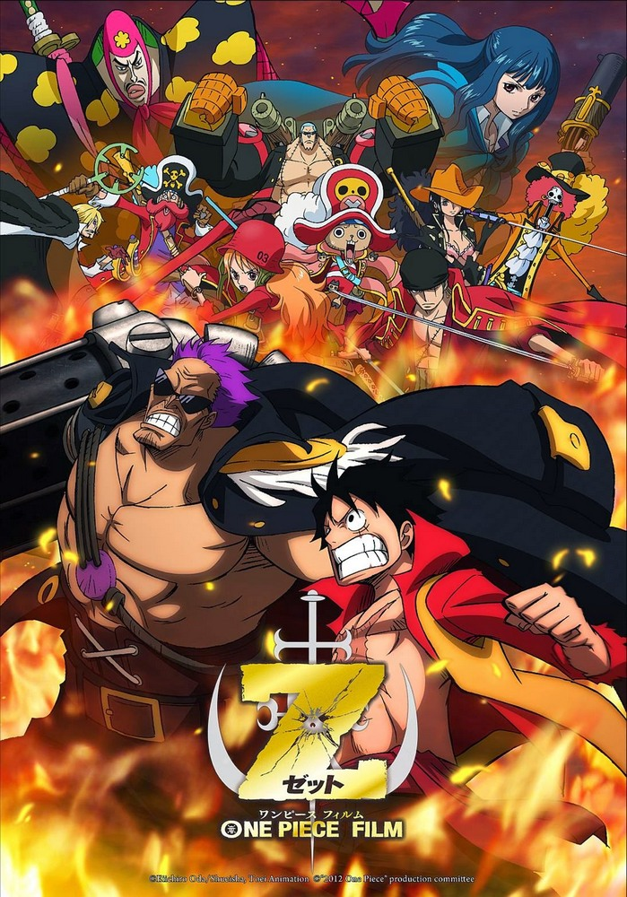
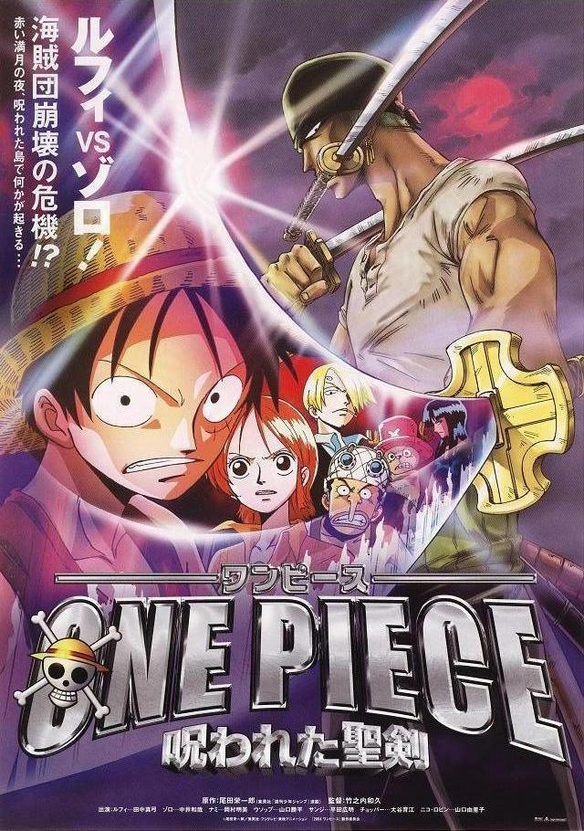

One Pice Z

Dikatakan dapat dibandingkan dengan Senjata Kuno, kartu andalan Angkatan Laut yaitu "Batu Dyna" tiba-tiba dicuri dan pria dengan kekuatan menakutkan bertanggung jawab atas kejadian itu, mantan Laksamana Angkatan Laut "Z", berdiri di hadapan Bajak Laut Topi Jerami.
Nonton
The Cursed Holy Sword

Di Pulau Asuka, Bajak Laut Topi Jerami belajar tentang Shichiseiken, yang dianggap sebagai pedang paling indah di dunia dan harta berharga, meski mengandung kutukan yang mematikan. Ketika mereka kembali ke kapal, mereka menemukan bahwa Zoro, yang bertindak sebagai penjaga, hilang, tetapi mereka terpaksa meninggalkan pelabuhan ketika mereka diserang oleh Marinir. Mereka berlabuh di bagian lain pulau dan menemukan sebuah desa, yang tugasnya adalah menjaga agar Pedang Tujuh Bintang tetap tersegel. Segera diserang oleh Marinir yang mencoba membebaskan pedang — di antaranya adalah Zoro! Apa alasan Zoro melakukan ini? Apa rahasia pedang itu? Mengapa Marinir menginginkannya? Jawabannya terletak pada malam bulan merah.
Nonton